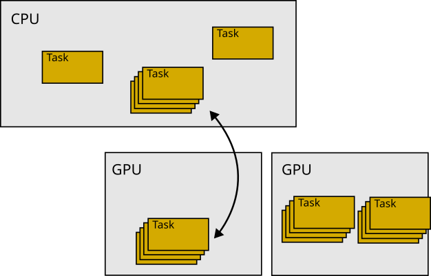

|
Peano
|
|
Peano
|

ExaHyPE uses GPUs in a classic offloading mode: It takes particular tasks, ships them to the GPU and then ships them back. Data does not reside on the accelerator permanently, and the accelerator is not used all the time. Not all solvers support GPU offloading, but solver variants with tasking or fused-kernel support can either have accelerator support built in or can be tweaked relatively easily to gain something from GPU devices.
If you have a solver with GPU support and want to activate this offloading, you have to do the following steps:
The setup instructions for the GPU backends are collected on the compiler-specific settings page. This page focuses on how GPU offloading works in ExaHyPE and how you can introduce it systematically, such that you gain performance (sometimes, throwing stuff onto the accelerator without any further thought slows the code down).
ExaHyPE's GPU offloading approach assumes that there are computations (cell/patch updates) which can be done without any effect on global variables. It works if we can ship a task to the GPU, then get the solution data for this task back, and no other global variable changes. We furthermore assume that the computations that fit onto the GPU have no state. They can use some global, static variables, but they cannot access the solver's state which can change over time. We rely on code parts which have no side effects and do not depend on the solver state (minus global variables).
The same argument holds for aggressive vectorisation: vectorisation works best if the computations on a patch do not have any side effects. ExaHyPE assumes that the GPU's SIMT and the CPU's SIMD are two realisations of the same pattern, so the stateless routines you write for the GPU also help the CPU vectoriser.
Working without side-effects might not work for all patches (Finite Volumes and Finite Differences) or octants (RKDG and ADER-DG) in your mesh: there are pieces of the mesh which evaluate and analyse some global data, or build up global data structures. In this case, ExaHyPE only offloads the remaining, simple patches/octants to the GPU. That is, having a solver that supports patches/cells without side effects does not mean that all cells have to be side effect-free.
The second thing to keep in mind is that ExaHyPE tries not to offload a single patch to the GPU. It can do, but this is then a degenerate variant of something way more generic: the code takes a set of octants from the mesh and moves them en bloc to the accelerator. There, one compute kernel updates all of these guys in one rush. We refer to this as fused updates.
We offload tasks or fused kernel batches to the accelerator. Each lowering into Peano yields a README-xxxxx.md file. In this markup file, you also find all the information of papers that have an influence on your chosen solver configuration. Solver variants that generate accelerator kernels expose this through their Python configuration, for example the FV Godunov solvers' fuse_compute_kernels option.
Once you have chosen such a solver and compiled the code, inspect the generated kernels/ subdirectories from time to time to check if the generated code does make sense.
Before we look into generated code or even start to implement something for GPUs, we should assess if there are any tasks that could, in theory, go to the accelerator.
You next have to instruct your solver that you plan to have patch or cell updates without write access to the solver's state. They also do not alter global state. Supporting stateful updates requires a tailored implementation.
The exact switch depends on the solver family. The DG solvers expose this as a pde_terms_without_state=True constructor argument. FV Godunov solvers use the fused-kernel generation path instead, i.e. you set fuse_compute_kernels=True, and the PDE callbacks used by the fused kernel have to be available as stateless/static snippets (see below):
To facilitate the offloading, we have to provide versions of our PDE term functions that can work independently of the solver object (and in return cannot modify it). Depending on which terms we have, we'll need stateless versions of the flux, the non-conservative product and the source term. We'll always need the eigenvalue function.
The simplest path is to let the Python API generate these terms for you. Most ExaHyPE solvers allow you to insert the realisation of a routine directly from the Python code via set_implementation(). The generated abstract base class then emits the term as a static method that is annotated with GPU_CALLABLE_METHOD, so the very same snippet can be called from the host and from the device. The relevant macros live in src/tarch/accelerator/accelerator.h:
GPU_CALLABLE_METHOD expands to the appropriate per-backend annotation (__host__ __device__ for CUDA/HIP, KOKKOS_FUNCTION for Kokkos, nothing for SYCL).TARGET_DECLARE / TARGET_DECLARE_END wrap a block of free functions in an omp declare target region when the OpenMP target (OMPT) backend is used, and expand to nothing otherwise.If you write the PDE terms by hand instead, keep the original (virtual) function and add a second static overload which accepts an additional flag of type Offloadable as its last argument. This last argument is solely there to let C++ distinguish the static version from the normal one, as C++ cannot overload with respect to static vs. non-static. Offloadable is an enum class { Yes } defined in exahype2::Solver, the abstract base class which Peano's Python API generates. A typical hand-written split looks like this:
The static version is used on the GPU. The CPU variant delegates immediately to it. GPU kernels cannot use the host's terminal output or assertion facilities, so the static routine omits both. The non-static variant can wrap the computation in assertions and logging. ExaHyPE calls the static variant from its compute kernels through, for example, Solver::flux( ..., Solver::Offloadable::Yes ).
set_implementation(), the realisation ends up in the AbstractMySolver class. As the static, GPU-callable variant typically lands in the abstract super class' cpp file, the compiler may not be able to inline it. If your compiler struggles with the inlining, you might be forced either to enable link-time/interprocedural optimisation (ipo), or to switch to a manual implementation and move the GPU routines into the headers. The build system is CMake. Configure Peano and the ExaHyPE libraries with a GPU backend. The relevant flags are PEANO_WITH_GPU_BACKEND (one of none, native, kokkos, acpp, ompt) and PEANO_WITH_GPU_ARCH (e.g. an NVIDIA sm_*, an AMD gfx*, or spir64 for Intel). A typical configuration reads:
Pick the backend that matches your toolchain as described on the compiler-specific settings page. Once Peano is rebuilt, the generated solver is GPU ready: rerun the Python script to lower your project, then compile and run.
ExaHyPE solvers which support GPUs/stateless operators typically host multiple compute kernels. On the Python level these kernels are plain C++ function calls stored as strings:
self._compute_kernel_call is a C++ function call for the normal task. It is called whenever you hit a single octant, i.e. a Finite Volume patch or a DG cell. It calls the virtual flux, eigenvalue, ... functions on the solver object.self._fused_compute_kernel_call is a C++ function call that ExaHyPE uses whenever it encounters a set of octants in the tree which can be processed embarrassingly parallel, as they all invoke the same PDE and none of them alters the state of the underlying solver object. The compute kernels identified by this string call the static flux and eigenvalue variants.For the FV Godunov solvers, fuse_compute_kernels=True makes the code generator populate these strings for you. The normal call resolves to something like
and the fused call resolves to
where {SOLVER} and {SOLVER_INSTANCE} are the solver name and singleton. The corresponding kernels/{SOLVER}/RiemannSolverFused.cpp is generated from a backend-specific template (RiemannSolverFused.{sycl,ompt,cuda,hip,kokkos}.template.cpp), so the same call site dispatches to the right backend depending on PEANO_WITH_GPU_BACKEND. The fused variant additionally receives a targetDevice argument; SYCL can run on both the host and the device, whereas the OpenMP target version only runs if a valid device has been selected.
If you use the default configuration, both kernel calls are set to reasonable defaults. Advanced users can override self._fused_compute_kernel_call with a tailored variant before lowering, but the replacement string has to match the generated fused-kernel signature and the fused patch data layout.
If only some patches/cells can be offloaded to the GPU, then you can redefine the routine
in your solver. By default, this routine returns true, so all compute kernels can end up on the GPU if they are selected for offloading. The default is written in the AbstractXXX solver. This is a normal (non-static) function, i.e. you can use the solver's state and make the result depend on it; nothing stops you from redefining it in your particular solver subclass to keep some kernels on the host.